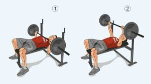

Date: 25 August 2048 | Author: Michael

Жим лёжа — базовое физическое упражнение со свободным весом. Выполняющий упражнение ложится на скамейку, опускает гриф до касания с грудью и поднимает до полного выпрямления в локтевом суставе. Используется в бодибилдинге как упражнение для развития больших и малых грудных мышц, трицепсов и переднего пучка дельтовидной мышцы.
Date: 25 August 2048 | Author: Michael
Приседания со штангой - базовое упражнение в бодибилдинге и пауэрлифтинге, для развития мышц бедра и ягодиц. Атлет, выполняющий упражнение, приседает и затем встаёт со штангой на плечах, возвращаясь в исходное положение стоя. Приседания считаются одним из важнейших упражнений не только в силовом спорте, но и в общефизической подготовке, а также используются в качестве вспомогательного упражнения в процессе подготовки атлетов практически всех видов спорта.
Date: 25 August 2048 | Author: Michael
Становая тяга — базовое (многосуставное) упражнение, выполняемое обычно со штангой, а также с гантелью или гирей, удерживаемыми между ног обеими руками. Используется как общий элемент физической подготовки и является одной из соревновательных дисциплин в таких видах спорта как пауэрлифтинг и силовой экстрим, применяется также и бодибилдерами для укрепления мышц поясницы, что позволяет в приседаниях лучше развивать ноги.